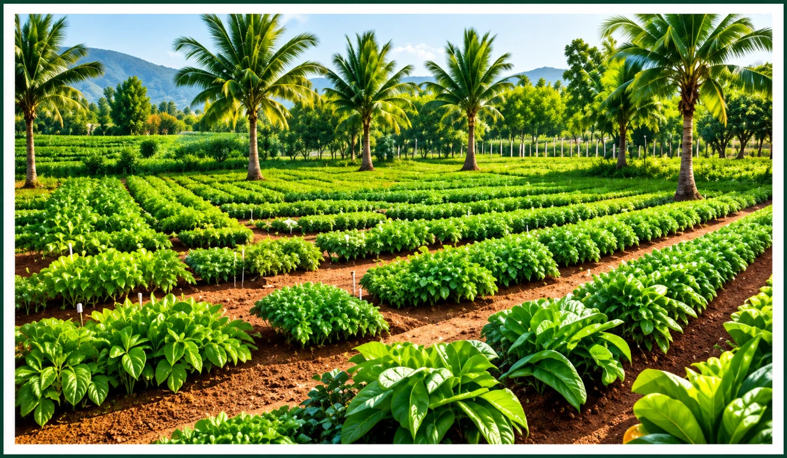

01
Multi-Layer Agricultural Production
Plan 5–7+ crop layers using canopy, ground and root-zone spaces for diversified farm income.
Multi-Layer Agricultural Production
- Core production engine of SAFE Mission
- 5–7+ crop layers on the same acre using vertical, canopy, ground and root-zone spaces.
- Scientific crop selection based on soil, water, climate, sunlight, duration, market & export potential.
- Creates diversified, staggered income and a risk buffer against crop failure.
- Goal: More value from the same land with higher, more stable farmer income